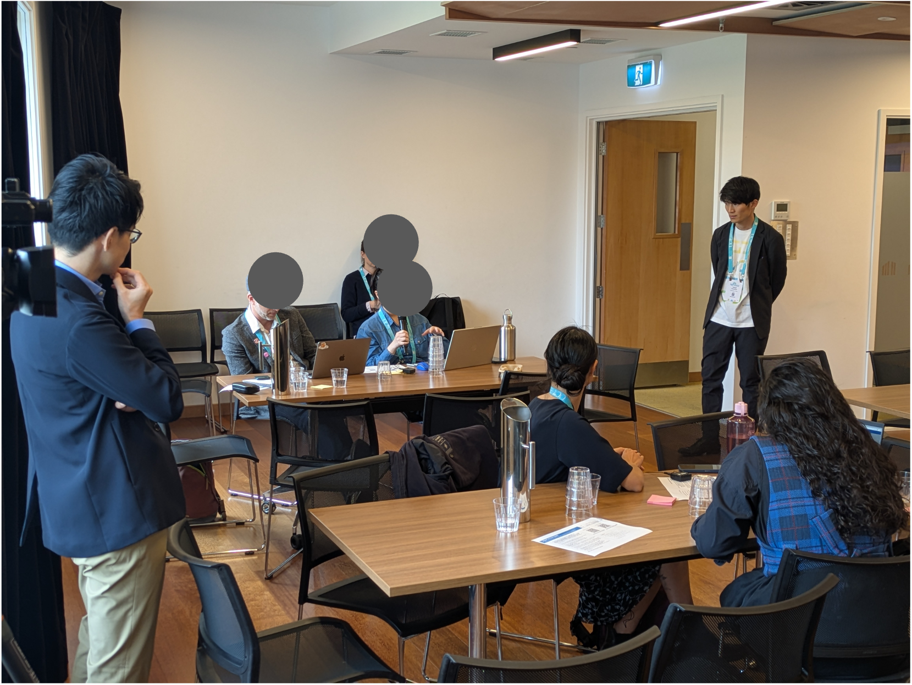

Working Group 2
モデルを用いて、人が未来をどう理解し、議論するかを明らかにする
Understanding How People Comprehend, Discuss, and Learn about the Future through Models
WG1のモデルやシナリオをインタラクティブGUI・タンジブルUI・シリアスゲームへと変換し、市民・学生・自治体職員との ワークショップを通じて、理解・対話・合意形成・学習のプロセスを明らかにします。
Transforms WG1's models and scenarios into interactive GUIs, tangible UIs, and serious games, revealing processes of understanding, dialogue, consensus-building, and learning through workshops with citizens, students, and government officials.
社会的課題
Societal Challenges
気候変動適応に関するモデルやシナリオは、政策検討に役立つ可能性がある一方で、実際の意思決定や市民・関係者との 対話に十分活用されているとは言い難いのが現状です。
特に、分野横断の相互作用や将来の不確実性は、専門家以外には理解しにくいものです。自治体職員にとっても、 複数部局の施策や異なる評価指標を統合的に扱い、関係者に説明しながらロードマップを検討することは容易ではありません。
また、適応計画を実効的にするには、関係者が単に情報を受け取るだけでなく、自ら施策を選び、結果を見て、 前提を見直し、他者と議論するような学習的プロセスが必要です。そのような対話と学習を支えるツールやワークショップ 設計は、まだ十分に確立されていません。
While models and scenarios related to climate change adaptation have potential for policy discussions, they are not yet adequately utilized in actual decision-making or dialogue with citizens and stakeholders.
Cross-sectoral interactions and future uncertainties are particularly difficult for non-experts to understand. Even for government officials, integrating measures across multiple departments and different evaluation indicators while explaining them to stakeholders is challenging.
Furthermore, making adaptation plans effective requires stakeholders to not just receive information but engage in learning processes—selecting measures themselves, observing results, revising assumptions, and discussing with others. Tools and workshop designs that support such dialogue and learning are not yet well established.
学術的課題
Academic Challenges
WG2の学術的課題は、不確実で複雑なモデルが、人間の理解、信頼、意思決定、合意形成、学習にどのように作用するかを 明らかにすることです。
参加型モデリングの研究では、Voinov and Bousquet（2010）が、ステークホルダーとともにモデルを構築・利用することが、 システム理解や意思決定支援に寄与しうることを整理しています。また、Voinov et al.（2018）は、参加型モデリングに おける手法やツール選択の体系化を試みています。これらは、本プロジェクトのワークショップ設計にとって重要な基盤です。
一方で、気候変動適応においては、モデルが不完全であること、将来の不確実性が大きいこと、評価指標が複数存在すること、 参加者の立場や価値観が異なることが重なります。そのため、モデルを提示すれば合理的な判断が促されるとは限りません。 利用者は、自身のメンタルモデル、経験、価値観、組織上の役割に基づいて情報を解釈します。Otto-Banaszak et al.（2011）が 示すように、気候変動適応に対する認識やメンタルモデルは主体によって異なり、制度や意思決定にも影響を与えます。
また、C-ROADSやEn-ROADSのようなシステムダイナミクスベースの対話型ツールは、気候政策の理解や議論を促す 先行事例として重要です。ただし、これらは主として緩和策を対象としており、地域の適応策、分野横断のトレードオフ、 自治体・市民・部局間の合意形成を扱うものではありません。
さらに、AIやLLMを用いた参加型モデリング支援は近年急速に注目されていますが、社会環境システムにおける問題構造化や ステークホルダー視点の抽出をどこまで支援できるかは、まだ探索的な段階にあります。AIエージェントが説明、要約、 模擬ステークホルダー、ファシリテーションを担う場合、参加者の理解、信頼、納得感、議論の質にどのような影響を 与えるかを実証的に評価する必要があります。
The academic challenge of WG2 is to clarify how uncertain and complex models affect human understanding, trust, decision-making, consensus-building, and learning.
In participatory modeling research, Voinov and Bousquet (2010) organized how building and using models with stakeholders can contribute to system understanding and decision support. Voinov et al. (2018) attempted to systematize method and tool selection in participatory modeling.
However, in climate change adaptation, model incompleteness, large future uncertainties, multiple evaluation indicators, and differences in participant positions and values all overlap. Presenting a model does not necessarily promote rational judgment. Furthermore, whether AI agents can support explanation, summarization, simulated stakeholders, and facilitation—and their empirical effects on understanding, trust, and discussion quality—must be assessed.
研究上の問い
Research Questions
- モデルや可視化は、参加者の理解や意思決定をどのように変えるのか。
- 複数の評価指標や不確実性を提示すると、意思決定はどのように変化するのか。
- モデルの不完全性や前提条件は、どのように説明すれば意思決定に活用されるのか。
- 立場の違いを与えたとき、参加者の選択や合意形成はどのように変わるのか。
- モデルを用いた対話は、適応パスウェイへの納得感や信頼性を高めるのか。
- AIによる説明、要約、ファシリテーション、模擬ステークホルダー提示は、学習や合意形成を支援できるのか。
- WG3で理論的に示される均衡や協力失敗の構造は、実際の参加者の意思決定にどの程度現れるのか。
- How do models and visualizations change participant understanding and decision-making?
- How does decision-making change when multiple evaluation indicators and uncertainties are presented?
- How should model incompleteness and assumptions be explained to be utilized in decision-making?
- How do participant choices and consensus-building change when position differences are assigned?
- Does model-based dialogue enhance conviction and trustworthiness in adaptation pathways?
- Can AI-based explanation, summarization, facilitation, and simulated stakeholder presentation support learning and consensus-building?
- To what extent do equilibria and cooperation failure structures theoretically shown by WG3 appear in actual participant decision-making?
主な活動
Key Activities
- モデルベースインタラクティブ・タンジブルUIの構築
- モデルベースシリアスゲーム・ワークショップの設計手法の検討
- 市民・学生・自治体職員を対象とした試行、ログ取得、メンタルモデル変化の分析
- 前提条件への理解度、納得感、信頼性の評価
- AIファシリテータ・AIエージェントの導入
- 意思決定・合意形成支援と教育・普及啓発への活用
- WG3で定式化したゲーム状況や協力失敗パターンを用いた実験的検証
- Building model-based interactive and tangible UIs
- Exploring design methods for model-based serious games and workshops
- Trials with citizens, students, and government officials; log collection; analysis of mental model changes
- Evaluating understanding of assumptions, conviction, and trustworthiness
- Introducing AI facilitators and AI agents
- Utilizing decision support, consensus-building support, and educational outreach
- Experimental verification using game situations and cooperation failure patterns formulated by WG3


WG2の成果
WG2 Outputs
WG2の成果は、気候変動適応を関係者が共に考えるための「対話・学習・合意形成の場の設計」です。 具体的には、以下の成果を目指します。
WG2's outputs are the "design of spaces for dialogue, learning, and consensus-building" for stakeholders to think about climate change adaptation together. Specifically, we aim for:
- WG1のモデルを用いたインタラクティブGUI
- 対面ワークショップで利用可能なタンジブルUI
- 市民、学生、自治体職員向けのシリアスゲーム設計
- 操作ログ、発話記録、アンケートを組み合わせた意思決定プロセス分析手法
- メンタルモデル変化、理解度、納得感、信頼性を評価する指標群
- AIファシリテータやAIエージェントを用いた対話支援手法
- WG3の理論モデルを検証するための実験的ワークショップ設計
- 教育・普及啓発に活用可能な簡易版ツール・教材
- Interactive GUIs using WG1's models
- Tangible UIs for in-person workshops
- Serious game designs for citizens, students, and government officials
- Decision process analysis methods combining operation logs, speech records, and surveys
- Indicator sets for evaluating mental model changes, understanding, conviction, and trustworthiness
- Dialogue support methods using AI facilitators and AI agents
- Experimental workshop designs for verifying WG3's theoretical models
- Simplified tools and educational materials for outreach
WG間の連続性： WG2はWG1のモデル・シナリオを対話・学習の場に変換すると同時に、WG3で 定式化されたゲーム状況や協力失敗パターンを実験的に検証する役割も担います。WG2で得られた行動データ・発話・ アンケート結果は、WG1のモデル改善とWG3のゲーム理論モデルの精緻化にフィードバックされます。
Inter-WG Connectivity: WG2 transforms WG1's models and scenarios into dialogue and learning spaces while also experimentally verifying game situations and cooperation failure patterns formulated by WG3. Behavioral data, utterances, and survey results from WG2 are fed back to improve WG1's models and refine WG3's game-theoretic models.